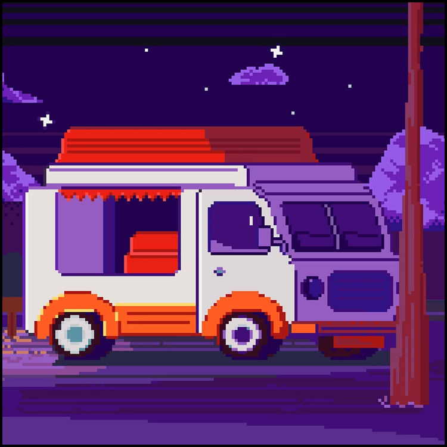
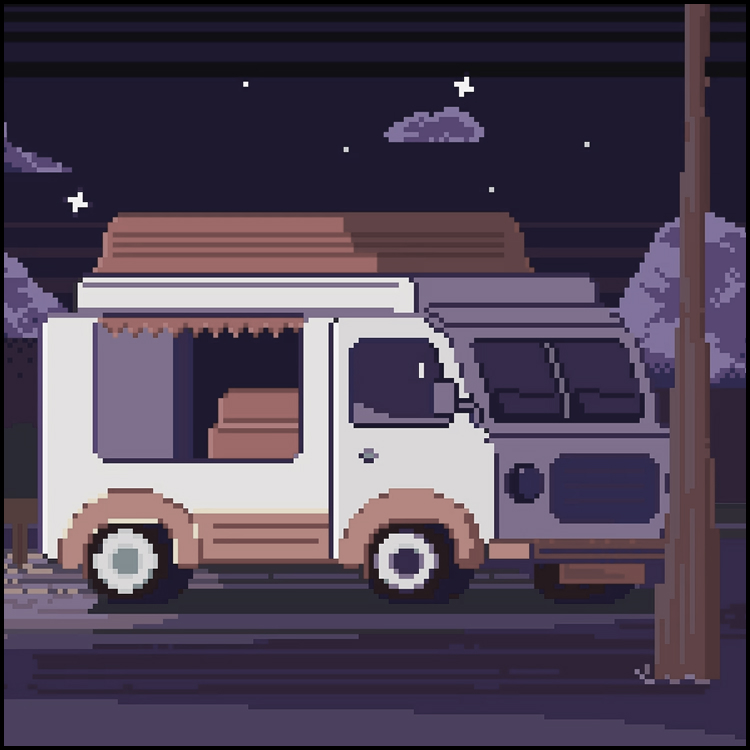
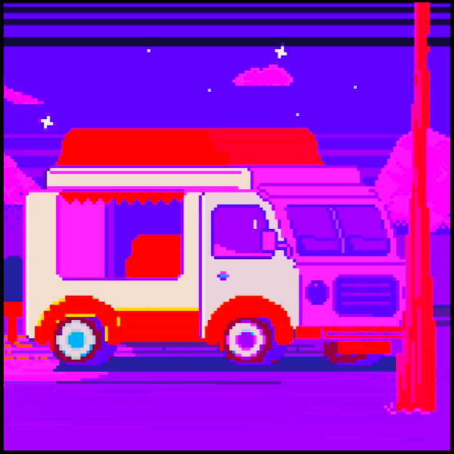
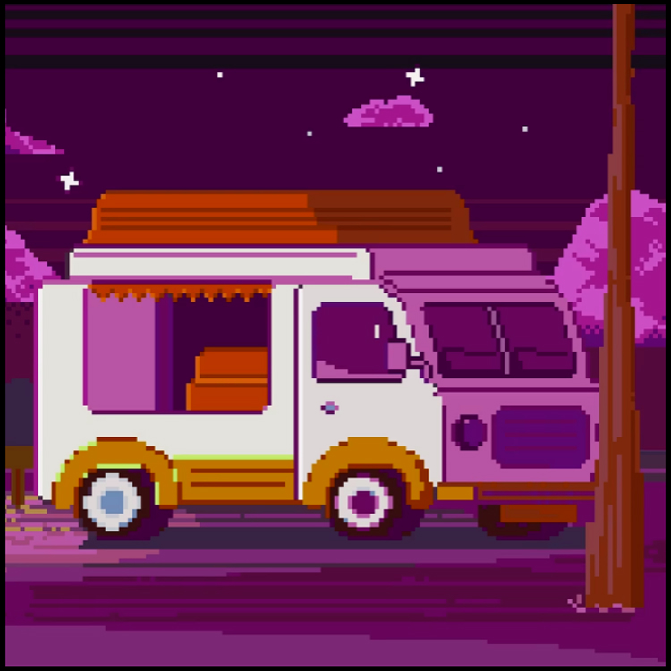
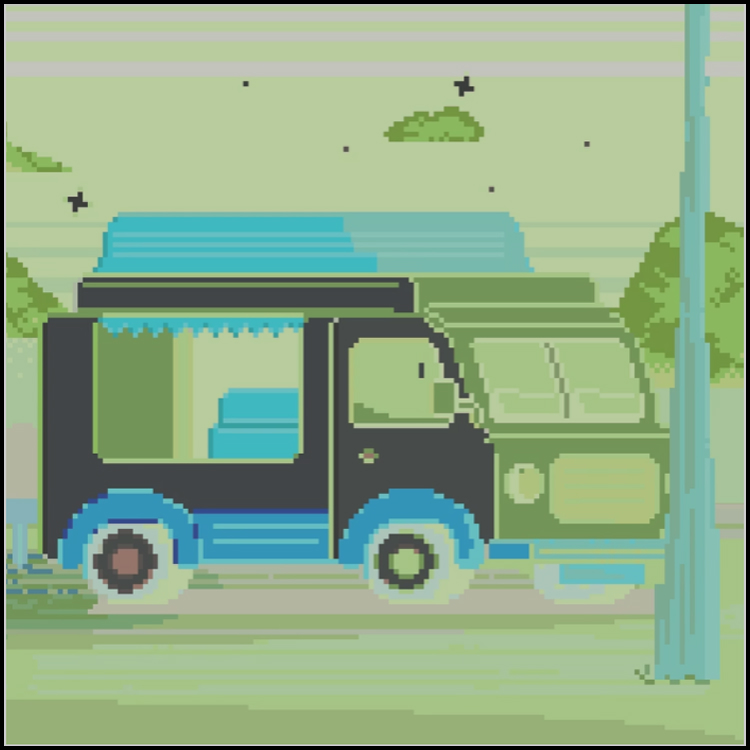
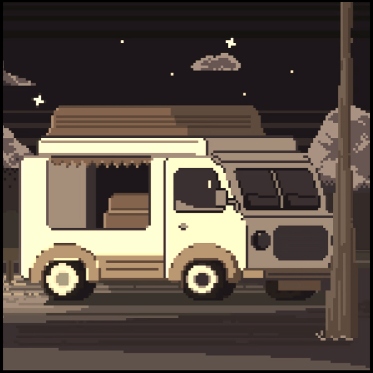
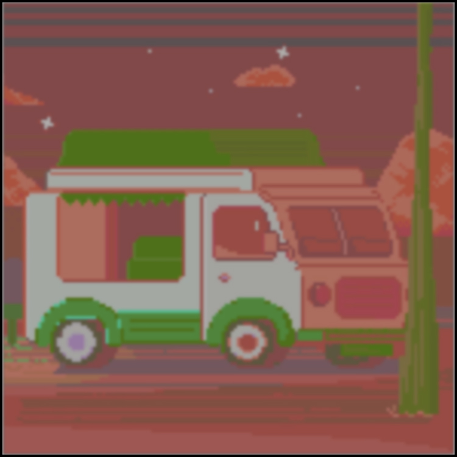

-
Фритрек и нулевой спринт: Подготовка к работе
<старт>
В начале всё казалось набором отдельных слов: макет, репозиторий, ветка, Pixel Perfect. Я медленно собирал систему координат и радовался каждому моменту, когда непонятное становилось рабочим.
Самым важным оказалось не торопиться. Подготовка дала ощущение, что даже большой проект можно разложить на маленькие действия и спокойно пройти их по порядку.
-
1 спринт: Я - чистый лист
<вход>
Первый спринт был похож на чистый лист: красиво, страшно и совсем непонятно, где провести первую линию. HTML постепенно стал не набором тегов, а способом дать странице смысл.
Я запомнил это состояние как тренировку внимания. Оказалось, что аккуратная структура делает половину работы ещё до стилей.
-
1 спринт: А если не получится?
<сомнение>
Иногда казалось, что все вокруг понимают быстрее. Я зависал на мелочах, перечитывал теорию и ловил себя на желании закрыть вкладку.
Но именно там появился полезный навык: не спорить с ошибкой, а смотреть на неё как на подсказку. Консоль и валидатор стали спокойнее любых догадок.
-
2 спринт: Погоня за идеальным макетом
<пиксели>
На втором спринте я впервые по-настоящему понял, что CSS любит точность. Один лишний пиксель мог менять настроение всей секции.
Сетка, отступы и размеры перестали быть случайными числами. Появилось удовольствие от того, как элементы наконец встают на свои места.
-
2 спринт: О тех, кто рядом
<команда>
Я недооценивал, насколько помогают чужие вопросы и ревью. Иногда достаточно одной фразы, чтобы увидеть собственную ошибку с другой стороны.
Постепенно стало легче просить помощи и спокойнее объяснять свои решения. Это тоже часть профессии, и, кажется, одна из самых важных.
-
3 спринт: Обходные стратегии
<поиск>
Когда решение не приходило сразу, я учился обходить задачу: упрощать пример, проверять гипотезу отдельно, возвращаться к документации.
Это изменило отношение к тупикам. Тупик оказался не стеной, а местом, где нужно поменять масштаб и посмотреть шире.
-
3 спринт: Когда опускаются руки
<пауза>Бывали дни, когда даже простая правка давалась тяжело. Тогда помогали паузы, короткие списки задач и честное признание: сегодня достаточно сделать немного.
Странно, но после таких остановок код становился понятнее. Видимо, обучение тоже нуждается в воздухе.
-
«Сейчас я здесь»
<дальше>
Сейчас я чувствую, что стал увереннее смотреть на интерфейс как на систему. В нём есть смысл, ритм, поведение и много маленьких решений, которые пользователь не обязан замечать.
Впереди ещё много пробелов, но теперь они выглядят не пустотой, а картой будущих тем. И это хорошее ощущение для закрывающего тега.